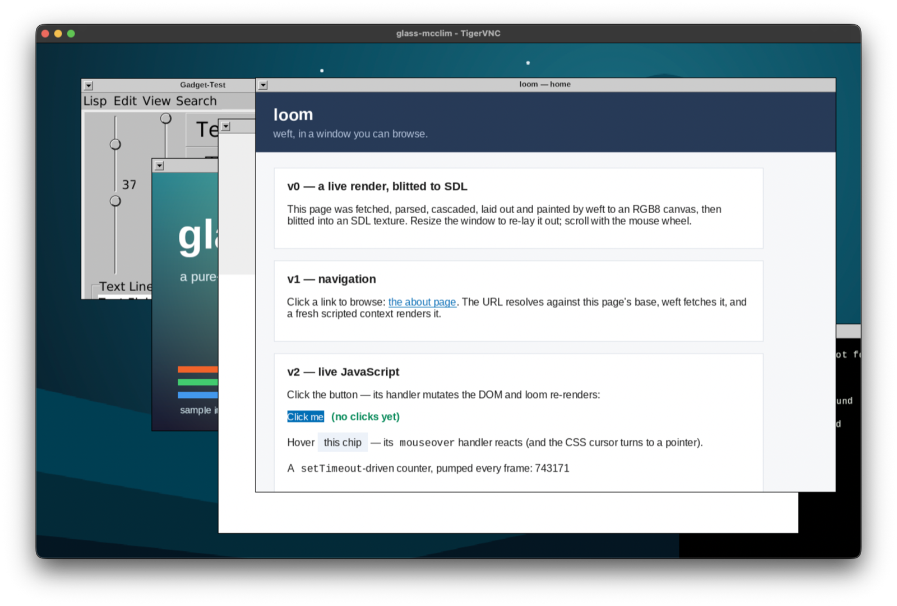
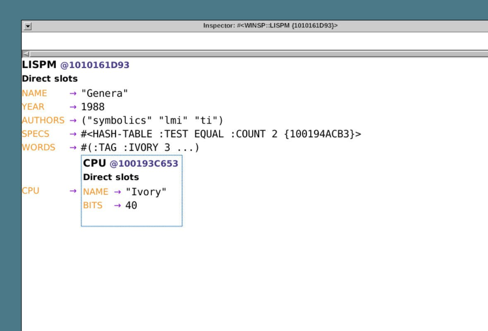
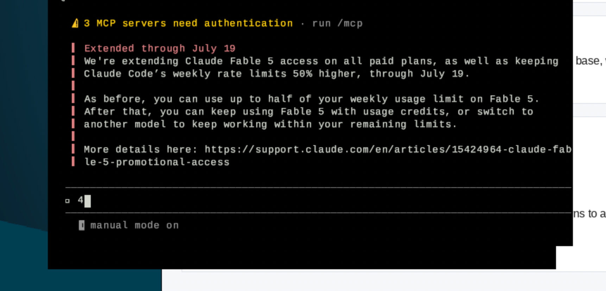

A crypto suite on Sunday. An SSH client on Tuesday. A git implementation on Wednesday. A filesystem, a compression codec, a package distribution, an agent and a VNC desktop on Thursday. What makes it a week rather than a list is that by Friday they are standing on each other — and on a B-tree written a month ago for something else entirely.
| Repo | Commits | Lines | Focus | ||
|---|---|---|---|---|---|
| weft | 105 | +3,441 | −600 | tables, flex, sticky, baselines | |
| modus | 43 | +19,912 | −18,008 | a CLI that compiles without SBCL | |
| glass | 35 | +5,784 | −796 | born as scry; a desktop by Friday | |
| cairn | 27 | +5,231 | −1,019 | born; git, read then written then served | |
| loom | 18 | +1,660 | −514 | tabs, cookie jars, a VNC backend | |
| natrium | 14 | +3,173 | −166 | born; phases 0 to 6, constant-time | |
| conch | 11 | +2,211 | −195 | born; SSH client, then server | |
| dist | 8 | +153 | −66 | born; a Quicklisp distribution | |
| operandi | 7 | +7,896 | −212 | born; a ReAct loop and a REPL | |
| seal | 5 | +714 | −610 | hands its ciphers to natrium | |
| cabinet | 4 | +1,348 | −2 | born; a filesystem on pagetree | |
| webrtc-data | 4 | +804 | −12 | born; a data channel, vs aiortc | |
| cram | 3 | +823 | −42 | born; DEFLATE, both directions | |
| …and 6 more | 7 | cl-consensus, cl-frpc, cl-transport, pagetree, scribe, stencil | |||
The order is the story. natrium lands on Sunday as a hashing floor, then a random number generator, then an authenticated cipher, then key agreement, then signatures — the whole NaCl primitive set by that evening, made constant-time on Monday. conch appears on Tuesday and takes its crypto from natrium rather than writing its own; by Thursday it has public-key authentication, command execution, file transfer and a server. And seal, eight days old, deletes its own symmetric and curve implementations in favour of natrium’s the same week.
Then the chain that has been four weeks in the building. № 16 introduced pagetree, a copy-on-write B+tree, and made it the Bitcoin node’s UTXO store within four days. This week cabinet becomes a filesystem — inodes, directories and file contents in one keyspace — on top of that tree. And cairn, the from-scratch git, learns to keep an entire repository inside a cabinet.
Route cairn’s git store through a small backend protocol, so the same cairn can keep a repository on the host filesystem or inside a cabinet, which lives in a single pagetree file. This is what lets cairn run where there is no host filesystem at all.
cairn — bc06808That last clause is the project’s whole argument in one line, and it is the reason a B-tree written for a Bitcoin node matters to a version control system. Every library here is written as though the operating system underneath might not be there, because the destination — the bare-metal machine of № 3 — is a place where it is not.
A related discipline shows up in a one-line cairn commit that drops a shell-out to
nproc: nothing in the core chain may spawn a process. On a hosted Linux that is a
stylistic preference. On the target it is the difference between running and not.
It begins as “a framebuffer and a VNC/RFB server in pure Common Lisp” under a different name, gains dirty-region tracking, a lossless tile encoding about eighty-eight times smaller than raw, and a compressed encoding riding cram’s stream — which was written the same morning. Then it is renamed glass. Then Friday happens.
A McCLIM backend, modelled on the X framebuffer one: CLIM applications render into a glass framebuffer and are served over the wire, with keyboard and pointer coming back from the VNC client — no X, no foreign code. Resize in both directions, stock CLIM applications running unmodified, a compositor for menus and pop-ups, real keyboard focus so the Listener evaluates over the network, and a small OPEN LOOK window manager. Then the window manager stops using McCLIM for its own decoration, because glass now owns text through scribe.
And then a terminal emulator, which arrives essentially complete: a real pty, ANSI escapes,
a scribe glyph grid, UTF-8 with wide characters and fallback fonts, colour emoji through
scribe’s layered-glyph support, a hardened VT with 256 colours and the alternate screen so
that htop and vim work, mouse reporting with a controlling terminal,
tabs, and inline bitmap graphics. The root menu offers a browser window, an image viewer, a
terminal, a calculator, and — from the Lisp machine lineage this project keeps reaching
for — an object inspector and a graphical debugger.

setTimeout counter
running — beside a stock McCLIM gadget window and glass’s own splash.
“i’m just opening apps that don’t have close boxes and dragging
windows that don’t focus around and browsing poorly rendered websites at 2 fps
BECAUSE I CAN.”
nostr — c7b032e2, 2026-07-18 03:19:38Z
. It lists direct slots: NAME is Genera, YEAR is 1988, AUTHORS is a list of symbolics, lmi and ti, SPECS is a hash table, WORDS is a vector, and CPU expands inline into a nested object whose NAME is Ivory and BITS is 40.">LISPM whose name is Genera, year 1988, CPU Ivory, 40 bits.
“can’t claim genera heritage without a live object inspector.”
nostr — 1f2672d1, 2026-07-17 22:18:24Z
Wednesday: read a repository — hashes, compression, loose objects, refs, log — then packfiles with delta-compressed objects, then clone over the smart HTTP transport, then checkout, then the write side, at which point real git accepts the commits it produces. Then status and diff matching git’s output, push over SSH, fetch and fast-forward pull, a three-way merge with a pluggable conflict resolver, recursive merge over multiple merge bases for criss-cross histories, delta compression in written packs within a few percent of git’s own, and repositories using the newer hash function, git-validated.
The acceptance criterion in almost every one of those subjects is agreement with the real
implementation rather than an internal test passing — the same standard
№ 15 held itself to against Bitcoin Core and
№ 17 against ttx and HarfBuzz.
Thursday is the part that matters for a machine with no Unix underneath: the storage backend seam, a worktree backend so a full working tree lives in a cabinet, a direct pagetree backend where a commit and a push are one transaction, and cairn’s own git server speaking the upload and receive protocols over SSH — over conch, two days old. Two performance fixes on the way: streaming pack indexing for bounded memory, which fixed cloning large repositories out of memory, and a parallel resolve about eight times faster.
Modus has been self-hosting in one sense since № 2,
where a running image compiled its successor from source embedded in its own binary, and
№ 4 proved the compiler leaves no fingerprint of the
machine that ran it. But the toolchain that produced those images still started from a host
Lisp. This week a modus binary appeared with the entire x64 build pipeline baked
into it, compiling Lisp to a native Linux executable in-image, with SBCL needed only to seed
the CLI once.
What stood between that and true self-hosting was reading. The compiler could not read its own sources inside the image — a lenient recovery for missing package qualifiers took the skipped forms from 204 to zero. A compiler that cannot parse itself is not self-hosting no matter how good its code generation is, which is a thing that only becomes obvious when you try.
In parallel, the runtime JIT came up in five staged pieces, each landing inert before anything called it: the translator baked into the evaluator image as dead code, real forms compiled end to end against an interpreter oracle, native call relocation for calls leaving a module, a constant pool with literal patching that survives collection, and finally the wiring into production evaluation behind a flag. The oracle in step two is the same in-image differential gate № 17 used to flip evaluators.
weft spent 105 commits in the least glamorous corners of CSS, which is where the difference
between a renderer and a browser lives: table height distributed across rows, a cell that never
shrinks below its content, mixed-unit column widths, flex item margins on both axes and in both
directions, minimum and maximum clamping on flex, grid and table containers,
position: sticky with the right containing block, and a run of line-box work
— text painted on the baseline, atomic inlines aligned to it, the strut descent kept
under a tall one.
loom turned into something usable: per-tab sessions with distinct browsing contexts, a per-context cookie jar threaded through the render, a tab bar with a pinned engine-status tab, a thread per connection so one render cannot freeze the service, and each navigation bound to the tab that began it. Bounded waits for web fonts and image prefetching, so a slow asset degrades a page rather than stalling it. And by Friday loom had a glass backend — the browser driven over VNC, with no SDL and no foreign code anywhere in the path, one week after № 18 replaced its SDL bindings by hand.